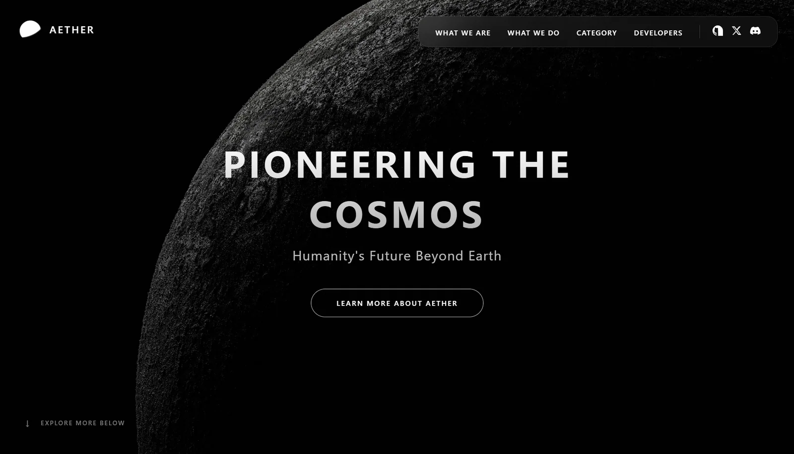

Three ways to frame the same project screenshot inside the real card slot. Source is public/project/aether.webp, cropped top-proportional with object-fit: cover. Every frame below is the exact card size, 620×360 — nothing is scaled.

A · Flat plateMost editorial: the image owns the space, only a hairline and a soft well.
aether.app/work
B · Browser chromeReads as a real site, but the 30px bar steals height from the shot.
C · Device frameAdds product context, yet the bezel crops the edges and dulls the detail.